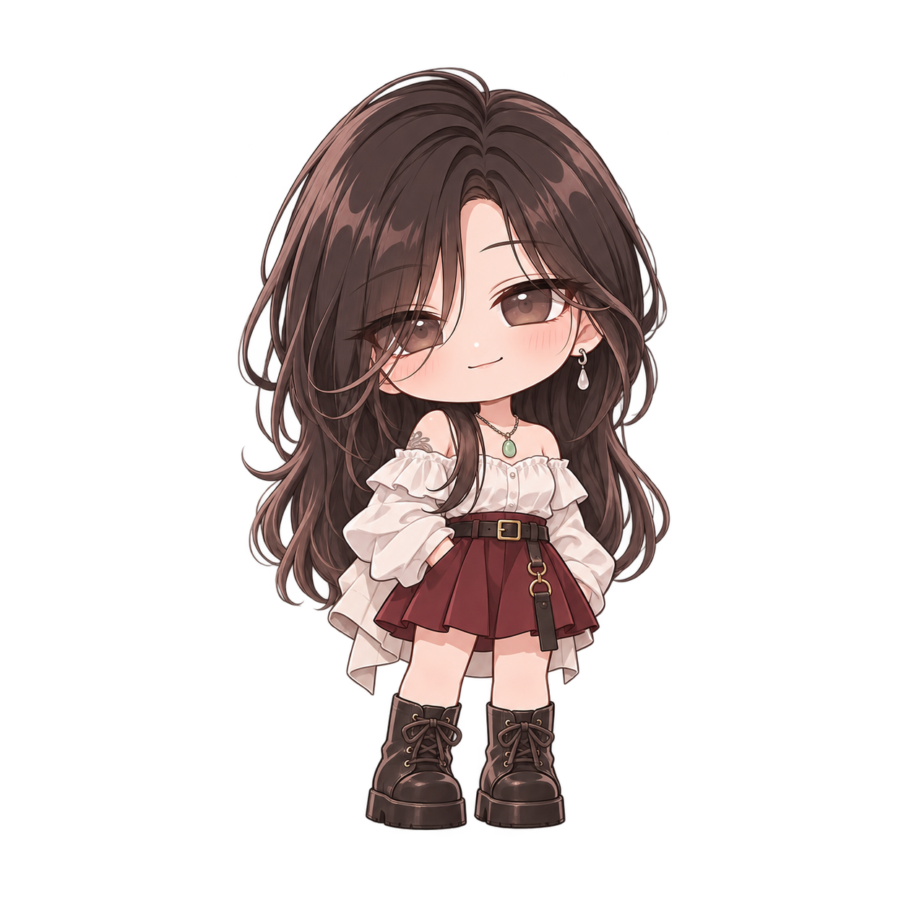
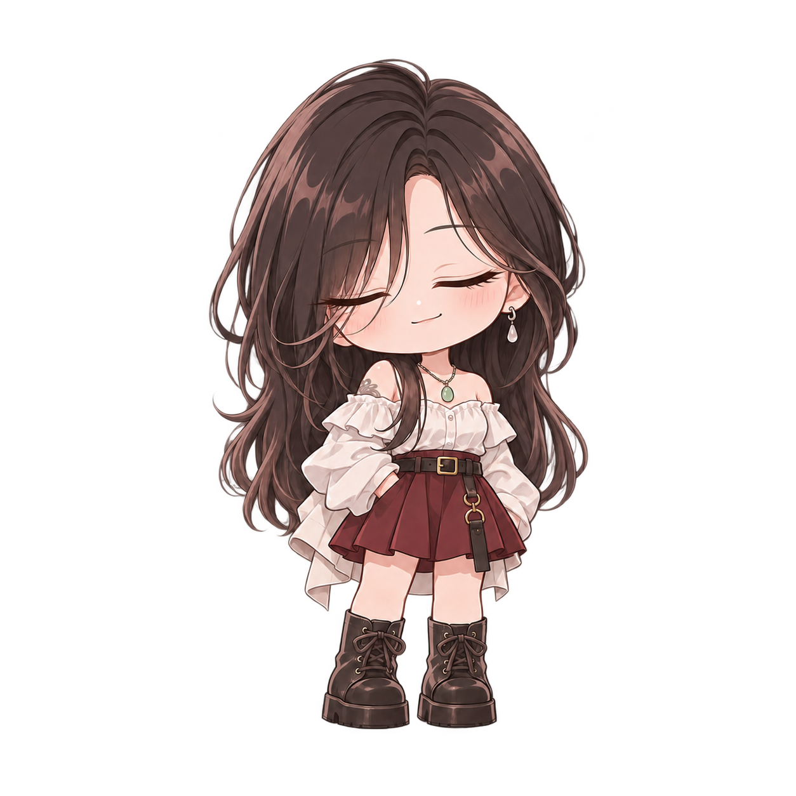

<!doctype html>
<html lang="zh-Hant">
<meta charset="utf-8">
<meta name="viewport" content="width=device-width,initial-scale=1,viewport-fit=cover">
<meta name="theme-color" content="#171722">
<title>小湘｜高清待機美術預覽</title>
<link rel="stylesheet" href="https://fonts.googleapis.com/css2?family=Noto+Serif+TC:wght@400;500&display=swap">
<style>
*{box-sizing:border-box}body{margin:0;background:#171722;color:#f4ebf2;font-family:'Noto Serif TC','Songti TC',serif}main{max-width:480px;margin:auto;min-height:100svh;padding:calc(env(safe-area-inset-top) + 28px) max(24px,env(safe-area-inset-right)) calc(env(safe-area-inset-bottom) + 24px) max(24px,env(safe-area-inset-left))}a{color:#d7c5df;font-size:12px;min-height:44px;display:inline-flex;align-items:center;text-decoration:none}small{display:block;margin-top:12px;font:9px system-ui;letter-spacing:.2em;color:#bdabc9}h1{font-size:25px;font-weight:400;margin:12px 0}p{font-size:12px;line-height:1.9;color:#c5b8cc}.tabs{display:grid;grid-template-columns:1fr 1fr;margin-top:22px;border-bottom:1px solid #806e8a55}button{color:inherit;font:inherit;cursor:pointer;touch-action:manipulation;-webkit-tap-highlight-color:transparent}.tabs button{min-height:48px;border:0;border-bottom:2px solid transparent;background:none;font-size:14px;color:#baacc3}.tabs button[aria-pressed=true]{color:#f4ebf2;border-bottom-color:#ddbedf}.stage{display:grid;place-items:center;height:380px;position:relative;overflow:hidden;background:radial-gradient(ellipse at 50% 65%,#43334877,transparent 65%)}.figure{position:relative;width:min(360px,95vw);height:min(360px,95vw);transform-origin:50% 92%}.figure>img{position:absolute;inset:0;width:100%;height:100%;object-fit:contain}.old{background-repeat:no-repeat;background-size:400% 200%;background-image:url('../../assets/characters/siang-001-idle-spritesheet.webp?v=1')}.is-playing:not(.old){animation:breathe 5s ease-in-out infinite}.note{text-align:center;min-height:24px}#play{display:block;margin:14px auto;min-height:44px;padding:10px 22px;border:1px solid #ad91b578;border-radius:24px;background:#352c40;font-size:12px}button:focus-visible,a:focus-visible{outline:2px solid #e5cbea;outline-offset:4px}button:active{opacity:.8}[hidden]{display:none!important}@keyframes breathe{50%{transform:scale(1.006,1.009)}}@media(max-height:700px){.stage{height:320px}}@media(prefers-reduced-motion:reduce){.is-playing:not(.old){animation:none}}
</style>
<main>
<a href="../../">‹ 返回小湘的日常</a>
<small>SIANG · ART PREVIEW 01</small>
<h1>小湘，清楚一點的相遇。</h1>
<p>先看看新版的臉、髮絲與衣服細節，還有輕輕眨眼的樣子。</p>
<div class="tabs" role="group" aria-label="比較待機美術"><button id="new" type="button" aria-pressed="true">新版高清待機</button><button id="old" type="button" aria-pressed="false">目前首頁版本</button></div>
<div class="stage"><div id="figure" class="figure"></div></div>
<p id="note" class="note" aria-live="polite">高清重繪 · 待機眨眼預覽</p>
<button id="play" type="button" aria-pressed="true">暫停動作</button>
<p>這是美術預覽，正式首頁仍保留原本動作。走路與坐姿尚未重製。</p>
</main>
<script type="module">
const $=id=>document.getElementById(id), figure=$('figure');
const durations=[850,350,300,170,160,300,650,850];
let version='new',playing=!matchMedia('(prefers-reduced-motion:reduce)').matches,raf=0,start=0;
function render(now){
 const elapsed=playing?now-start:0;
 $('open').hidden=version==='old'||elapsed%4000>=3820;
 $('closed').hidden=version==='old'||elapsed%4000<3820;
 if(version==='old'){let time=elapsed%durations.reduce((a,b)=>a+b,0),n=0;while(time>=durations[n]&&n<7)time-=durations[n++];figure.style.backgroundPosition=`${n%4*100/3}% ${Math.floor(n/4)*100}%`;}
 else figure.style.backgroundPosition='';
 if(playing&&!document.hidden)raf=requestAnimationFrame(render);
}
function sync(){figure.className=`figure${version==='old'?' old':''}${playing?' is-playing':''}`;cancelAnimationFrame(raf);start=performance.now();$('play').textContent=playing?'暫停動作':'播放動作';$('play').setAttribute('aria-pressed',String(playing));$('new').setAttribute('aria-pressed',String(version==='new'));$('old').setAttribute('aria-pressed',String(version==='old'));$('note').textContent=version==='new'?'高清重繪 · 待機眨眼預覽':'目前首頁 · 八格待機動畫';render(start);}
$('new').onclick=()=>{version='new';sync()};$('old').onclick=()=>{version='old';sync()};$('play').onclick=()=>{playing=!playing;sync()};document.addEventListener('visibilitychange',sync);
await Promise.all([...document.images].map(i=>i.decode()));sync();
</script>
</html>
